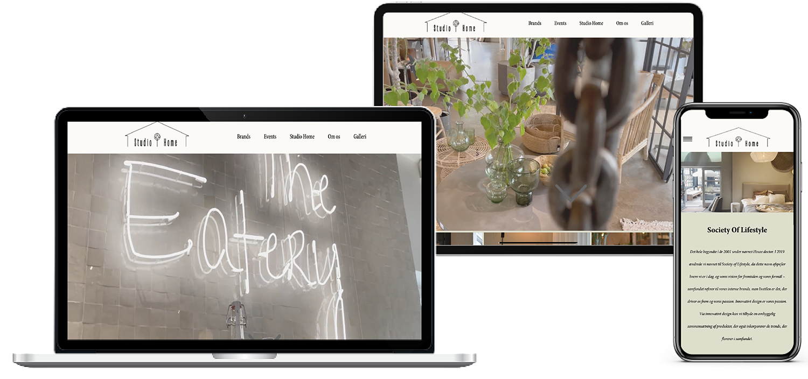
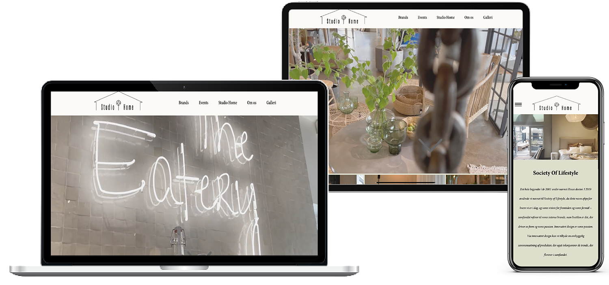
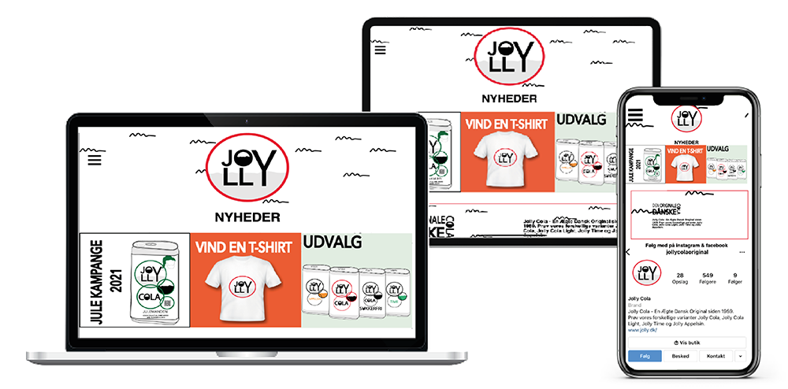
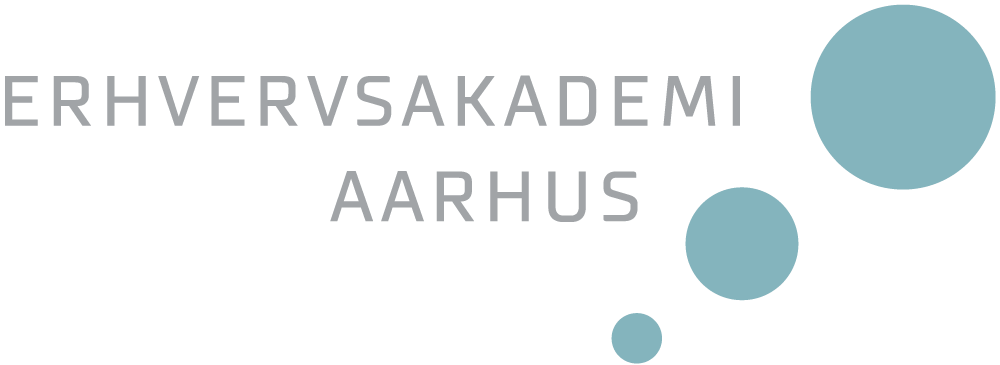

Mød Tin
Frontender
Hej med jer. Jeg hedder Tin, og jeg har valgt frontender linjen på multimediedesign uddannelsen. Frontend er linjen, hvor du beskæftiger dig hovedsageligt med kodning af brugergrænseflader. Med de mange projekter du skal igennem, får du afprøvet og forbedret dine evner som frontender. Du kommer i det hele taget til at opleve, at studiet er meget mere praktisk end teoretisk – hvilket også er en af grundende til, at jeg har valgt uddannelsen.
Egentlig er jeg uddannet markedsføring økonom, men jeg ville godt have noget mere it-relateret. Derfor startede jeg på datamatikeruddannelsen i 2020, hvor det næsten var udelukkende kode, jeg beskæftigede mig med. Men dette var alligevel lidt for hardcore for mig. Jeg ville have en blanding af de to uddannelser, jeg havde gået på. Derfor passede multimedieuddannelsen perfekt for mig. Her lærte jeg ikke bare at kode, eller markedsføre de produkter jeg producerede – jeg lærte også, at designe flotte brugergrænseflader, og blev kastet ud i noget projekter, der gjorde at mine evner inden for kodning steg markant, på meget kort tid.
Allerede på 2. semester vælger man den retning man vil have på 3. semester, hvilket er her jeg valgte frontend linjen. Undervisningen består selvfølgelig hovedsageligt at kodning, men der er stadig stor fokus på f.eks. hvordan brugergrænsefladen ser ud. En motivation til at vælge frontend linjen, var også de muligheder man får efter uddannelsen. Der er stor efterspørgsel på folk, der kan arbejde med kode, og har en forståelse for, hvad der sker i koden.
Så hvis du vil have en god blanding af både programmering og kodning af flotte brugergrænseflader, skal du vælge frontend linjen på MDU.
Her er et af de projekter jeg har været med til at arbejde på.
På 2. semester lavede vi en biludlejnings side, hvor vi benyttede os af kodesproget, JavaScript. Her gjorde vi siden dynamisk, så kunden kunne vælge deres præferencer, og i sidste ende få udskrevet en kvittering. Det var en spændende intro til JavaScript, og en god måde, at se hvilke egenskaber netop dette kodesprog, kunne byde ind med.
Se mit eksamens projekt på klik her

Mine drømme
Efter uddannelsen satser jeg på at finde et arbejde, der involverer kodning til hverdag. Jeg håber også jeg kan gøre brug af min markedsførings økonom uddannelse, så det ligesom på MDU bliver en blanding af flere elementer, jeg kommer til at arbejde med.
Mød Emma
UX/UI creator
Mit navn er Emma. Velkommen til.
Nedenfor kan du se, læse og opleve livet som en UX/UI creator.
Men hvad betyder UX/UI?
UX står for User Experience. Dette virker ret enkelt og lige til at forstå, men bag brugeroplevelsen ligger der en masse fagbegreber, undersøgelser og lignede.
”User experience’ encompasses all aspects of the end-user’s interaction with the company its service, and its products.”
– Don Norman, Apple 1990’erne
Som UX-designer lære man hvordan man har brugeren med gennem hele rejsen. Lige fra ide til praktisk. Man kan stille det op med dette eksempel - ”En UX-designer vælger ikke farver ud fra personlige holdninger, men på en forståelse af brugerens behov. Gennem denne forståelse sikre man sig en bruger venligt design”.
UI står for user interface eller oversat til dansk, brugergrænseflade.
UI skaber følelsen og udseendet på siden. Her arbejder man konstant sammen med alt den samlede empiri igennem UX, og formidler det til en side, hvor man både har en intuitiv brugergrænseflade samt et enestående design. Gennem UX-arbejdet benytter du dig af analoge processer, mock ups og wire frames - for at kunne visualisere det færdige projekt.
Hvorfor har jeg valgt multimediedesign?
Okay, nu vil jeg tage jer tilbage til min gymnasietid, hvor jeg studerede på Herningsholm handelsgymnasie i Ikast. Gennem min tid på handelsgymnasiet, havde vi faget afsætning, hvor man lærte om markedsføring, målgrupper og hvordan vi kunne udrede vores segment og ud fra det, skabe forståelse for kundens behov. Dette fag har altid tiltalt mig, da man kunne få lov til at være kreativ og sammenkoble det til noget business relateret. Her var noget, jeg godt kunne se mig selv arbejde med i fremtiden. Dog havde jeg ingen anelse om, hvordan jeg ville kunne komme frem til det, uden at ende som afsætningslære - da dette var min eneste forbindelse til faget.
Da jeg stadig var meget i tvivl om fremtiden, besluttede jeg mig for at tage en del sabbat år. Jeg startede med at arbejde i en tøjbutik, hvor jeg fik ansvaret for deres instagram. Her fik jeg en masse kreativ frihed til at tage billeder, oprette insta-storys og lave opslag. ”UX/UI giver mening for mig, da jeg er en meget kreativ pige, men jeg er bedst kreativ når jeg kender målet og har en forståelse bag”. Ikke for at citer Hannah Montana, men “you get the best of both worlds”. Gennem UX skaber man en forståelse for brugeren og målgruppens behov, og hvad sitet skal indeholde for at optimere den digitale brugerplatform. Herved kommer man frem til den bedst mulige og intuitive platform for kunden.
Her er et af de projekter jeg har været med til at arbejde på.
På skolen arbejder vi oftest i studie grupper. Dette er rart, når man f.eks. sidder i en kreativ proces, da man også ude på arbejdets markedet oftest arbejder i teams. På den her måde har man altid nogle af spare med – ligesom ude på arbejdsmarkedet.
 

Se mit eksamens projekt på klik her
Mine drømme
Jeg håber, fremtiden bringer en masse nye spændene oplevelser og opgaver. Jeg brænder for at kunne hjælpe virksomheder til at styrke deres brand, ved at skabe forståelse og et direkte talerør fra virksomhed til kunden.
Mød Lasse
Content creator
Mit navn er Lasse, og jeg ser mig selv som en content creator.
Content creator linjen på MDU, giver mig mulighed for at udforske mine passioner for branding, grafisk design og kommunikation. Jeg har på MDU fået lov at prøve kræfter med min kreativitet og min store passion for æstetik. Jeg har altid vidst, at jeg skulle beskæftige mig med noget kreativt. Dog har jeg været i tvivl om hvilke muligheder der var, for at kunne inkludere mine æstetiske evner i mit studie og arbejdsliv bedst muligt. På MDU har jeg beskæftiget mig med disse interesser, og særlig i faget design - og i de projektorienteret forløb, har jeg kunne udfolde mig kreativt - f.eks. når det kom til visuelle identiteter og grafiske virkemidler.
”Jeg synes det er spændende at
arbejde med virksomhedes identiteter og
måske forsøge at tage dem i en ny retning”
- Lasse

Se hvad jeg har lært og det kan du også
Se mit eksamens projekt på klik her
Multimediedesigner uddannelsen er et meget projekt orienteret uddannelse. Det betyder, at du langt den største del af tiden befinder dig i mindre grupper, som sammen arbejder på et projekt. Til eksamen på det første semester blev vi dog stillet en individuel opgave, hvor man kunne udforske sine kompetencer på egen hånd. Vi blev stillet en meget interessant opgave, hvor vi skulle beskæftige os med en række forskellige produkter, og derefter arbejde med virksomhedens identitet - og udforme et produkt i form af en hjemmeside. Her valgte jeg at beskæftige mig med Jolly Cola. I Jolly projektet valgte jeg at give brandet et overhaul I form af en helt ny visuel identitet, der i højere grad skulle tiltrække en yngre og mere kvalitetsbevidst målgruppe.
Få et job sammen med dit studie
Jeg har igennem mit studie fundet et studie relevant job hos en mindre sanitetsagent virksomhed i Aarhus, ved navn Cosani. Her sidder jeg i en marketing afdeling, og agerer som ansigt ud til for virksomheden, og dets brands. Jeg står for virksomhedens SoMe kanaler og udformer diverse forfaldne grafiske opgaver. Det er virkelig fedt at prøve kræfter med de ting jeg har lært på MDU i erhvervslivet, og få noget relevant erfaring.
Arbejdsopgaver
SoMe håndtering
Video redigering
Billedredigering- og formatering
Grafiske opgaver
Mine drømme
Jeg drømmer om at arbejde med branding. Jeg har en stor passion for at arbejde med virksomheder og deres identitet, samt udarbejde og opretholde integrerede kommunikation og markedsføring. Jeg er drevet meget af ideer, og når man er det sted i processen, hvor det føles som om alt kan lade sig gøre, er det kun er kreativiteten der sætter grænser. Mit ønske er at anvende disse passioner i mit arbejdsliv, og eventuelt en dag have mit eget marketingsbureau. Her vil vi hjælpe virksomheder med deres kommunikation og udvikle deres identitet omkring et all around koncept, hvor intet er overladt til tilfældigheder.
